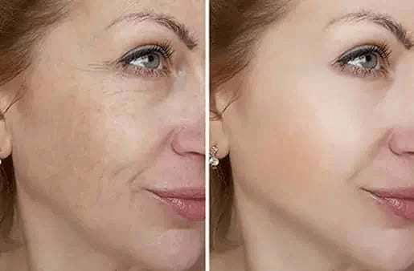

Στις , ένα αστείο επεισόδιο συνέβη στην Αθήνα. Κατά τη διάρκεια της γαμήλιας τελετής, ο νεαρός γαμπρός είδε για πρώτη φορά το διαβατήριο της μέλλουσας συζύγου του και έκανε σκηνή. Αποδείχθηκε ότι η γυναίκα έκλεισε τα 64 φέτος. Η Ιωάννας έκρυβε την ηλικία της για ένα χρόνο, λέγοντας στον Γιάννη ότι ήταν μόλις 29 ετών. Το πρόσωπο και το σώμα της γυναίκας φαινόταν πραγματικά πολύ νέα, και ο άνδρας δεν συνειδητοποίησε καν ότι ήταν ακριβώς δύο φορές μεγαλύτερή του.
Έτσι, χάρη σε αυτό το περιστατικό, εκατοντάδες χιλιάδες άνθρωποι έμαθαν για το νέο και πιο αποτελεσματικό προϊόν αναζωογόνησης του δέρματος που δημιουργήθηκε στην Ελλάδα
Ορίστε τι είπε ο Γιάννης για την κατάσταση:
Δεν μπορείτε να φανταστείτε πόσο σοκαρίστηκα όταν είδα την πραγματική ηλικία της Ιωάννας. Σε τελική ανάλυση, φαίνεται το πολύ 30! Δεν είχα ιδέα ότι θα μπορούσε να είναι πολύ μεγαλύτερη. Είμαστε μαζί έναν ολόκληρο χρόνο και ήμουν χαρούμενος και την αγαπούσα. Αλλά όταν είδα το διαβατήριό της στο γάμο, σοκαρίστηκα τόσο που άρχισα να φωνάζω στην Ιωάννας και μετά έφυγα τρέχοντας.
Για περισσότερο από ένα μήνα ήμουν απελπισμένος και δεν ήξερα τι να κάνω. Αλλά τότε συνειδητοποίησα ότι η ηλικία της Ιωάννας είναι απλώς ένας αριθμός στο διαβατήριό της. Και αν δεν κοιτάξω αυτόν τον αριθμό, την αγαπώ ακόμα. Είναι πανέμορφη πολύ πιο ωραία από πολλές νέα γυναίκες. Γιατί λοιπόν φοβήθηκα τότε, αφού δεν άλλαξε τίποτα; Έτσι, όταν μου έφυγε το αρχικό σοκ, πήγα αμέσως στην Ιωάννα, της είπα ότι τη συγχωρώ και της έκανα ξανά πρόταση. Παντρευτήκαμε, πήγαμε μήνα του μέλιτος και τώρα περιμένουμε και μωρό. Είμαστε ευτυχείς!
Το συντακτικό προσωπικό μας τρελάθηκε με αυτήν την κατάσταση και αποφασίσαμε να πάρουμε συνέντευξη από την Ιωάννα.
Δημοσιογράφος: Γεια σου, Ιωάννα! Παρακαλώ πες μου, γιατί φαίνεσαι τόσο νέα και γιατί έκρυβες την πραγματική σου ηλικία από τον Γιάννη;
Γεια σας, θα με πιστεύατε αν σας έλεγα ότι ήμουν 64 ετών; (γέλια). Θα ήταν ακόμη πιο περίεργο. Εξάλλου δεν φαίνομαι καν 40 λόγω του προσώπου και του δέρματός μου. Όχι 64. Γι' αυτό ορκίστηκα ότι δεν θα πω στον νεαρό και όμορφο Γιάννη για την ηλικία μου, όταν γνωριστήκαμε. Δεν ήθελα να τον τρομάξω, γιατί τα πηγαίναμε καλά.
Δημοσιογράφος: Πραγματικά δυσκολεύομαι να πιστέψω ότι είσαι 64 ετών. Βλέπω ένα όμορφο κορίτσι, που φαίνεται το πολύ 35. Πώς έγινε αυτό; Πείτε μας περισσότερα.
Ξέρετε, πριν από 12 χρόνια, πήρα διαζύγιο από τον πρώην σύζυγό μου. Ήμουν ήδη 52 ετών και με άφησε για μια νεότερη και πιο όμορφη κοπέλα. Ήμουν σε φοβερή κατάθλιψη για 2 χρόνια αφότου έφυγε. Οι γιατροί μου συνταγογράφησαν αντικαταθλιπτικά, αλλά ακόμα δεν μπορούσα να επιστρέψω στο φυσιολογικό.
Και μετά αποφάσισα ότι θα αποδείξω στον εαυτό μου ότι είμαι γυναίκα και μπορώ να είμαι νέα και όμορφη σε οποιαδήποτε ηλικία.
Άρχισα να ξοδεύω όλα τα χρήματά μου σε διάφορα αναζωογονητικά προϊόντα που διαφημίζονταν στην τηλεόραση εκείνη την εποχή. Αλλά κανένα δεν με βοήθησε. Τότε άρχισα να παρακολουθώ ακριβά μαθήματα πλαστικών επεμβάσεων σε κλινικές ομορφιάς στο Μιλάνο. Και ούτε αυτά με βοήθησαν. Και τότε συνειδητοποίησα ότι δεν υπήρχε τίποτα καλύτερο από το να προσπαθήσω να επιλέξω μία σύνθεση φυσικών συστατικών μόνη μου και να καταλάβω τι λειτουργεί καλύτερα ή χειρότερα. Είμαι φαρμακοποιός με 30 χρόνια εμπειρίας, οπότε δεν ήταν δύσκολο για μένα να δημιουργήσω διάφορες συνταγές από ελληνικά βότανα και φυτά και να τα δοκιμάσω στον εαυτό μου.
Δημοσιογράφος: Πολύ ενδιαφέρον, και το πετύχατε;
Όπως μπορείτε να δείτε από το πρόσωπό μου – το πέτυχα. (γέλια). Για πάνω από 3 χρόνια, δοκίμαζα διαφορετικές φόρμουλες στον εαυτό μου, αλλά δεν έβλεπα κάποιο αποτέλεσμα, ή θα ήταν πολύ μικρό. Αλλά δεν είχα σκοπό να τα παρατήσω και όταν έγινα 57, τελικά δημιούργησα κάτι απίστευτο. Ως συνήθως, άρχισα να χρησιμοποιώ την επόμενη φόρμουλά μου και 7 ημέρες αργότερα οι φίλοι μου άρχισαν να παρατηρούν ότι το πρόσωπό μου άλλαζε. Δεν το σκέφτηκα πολύ εκείνη τη στιγμή, αλλά μετά από 30 ημέρες από τη χρήση της νέας μου φόρμουλας, οι φίλοι και η οικογένειά μου δεν μπορούσαν να με αναγνωρίσουν!
Φανταστείτε, να πάτε στον κομμωτή σας για να κάνετε ένα κούρεμα ως συνήθως, και αντί να σας χαιρετάει, να σας σπρώχνει μακριά με μάτια γεμάτα τρόμο. Ήταν μια πολύ αστεία εμπειρία. Μόνο αφού του έδειξα το διαβατήριό μου, με πίστεψε. Θυμάμαι ακόμα τα σοκαρισμένα μάτια του και τη φράση: "Δεν μπορεί να είναι αλήθεια, πριν από ένα μήνα ήρθε σε μένα μια ηλικιωμένη γυναίκα με λυπημένα μάτια, και τώρα βλέπω μια νεαρή και όμορφη κοπέλα με μάτια που λάμπουν από ευτυχία. Μου κάνετε πλάκα;
Αλλά δεν ήταν φάρσα. Και εκείνη την ημέρα κατάλαβα ότι κατάφερα να δημιουργήσω κάτι απίστευτα πολύτιμο και απαραίτητο για τους ανθρώπους. Τότε, έγραψα πάνω από δώδεκα επιστολές σε διάφορα ερευνητικά κέντρα στην Αθήνα και σε φαρμακευτικές εταιρείες της Ελλάδας, αλλά υπήρξαν κάποιες εκπλήξεις.
Δημοσιογράφος: Τι εκπλήξεις?
Δημοσιογράφος: Τι εκπλήξεις;
Όλες οι εταιρείες ανεξαιρέτως μου απάντησαν και μου πρόσφεραν ένα πολύ μεγάλο χρηματικό ποσό για την φόρμουλά μου. Αλλά με εξέπληξε πολύ όταν μου είπαν ότι επρόκειτο να πουλήσουν το προϊόν μου για 200 ευρώ! Στη συνέχεια, εξήγησα ότι στη φόρμουλα μου, όλα τα συστατικά είναι από φυτά που αναπτύσσονται στην Ελλάδα και, επομένως, η παραγωγή σύμφωνα με την φόρμουλά μου θα ήταν πολύ φθηνή. Μου είπαν ότι δεν ήταν πλέον δουλειά μου και ότι θα πουλούσαν το προϊόν μου όσο ήθελαν.
Δημοσιογράφος: Και τι έκανες;
Πιστεύω ότι το προϊόν μου πρέπει να είναι διαθέσιμο σε όλους. Επομένως, αρνήθηκα να πουλήσω την φόρμουλα και αποφάσισα κάνω την παραγωγή μόνη μου. Πήρα ένα μεγάλο δάνειο από μια τράπεζα, προσλάβαμε τους καλύτερους φαρμακοποιούς της χώρας και δημιουργήσαμε την παραγωγή μας. Και αυτό μας επέτρεψε να πουλήσουμε το προϊόν μας όχι 200 euro , αλλά μόνο , sino por solo . Αυτός είναι ο ορός με unispheres. Ελπίζω πραγματικά ότι με τόσο χαμηλή τιμή, την οποία καταφέραμε να επιτύχουμε με τη δική της παραγωγή, θα κάνουμε το προϊόν μας διαθέσιμο στην πλειοψηφία των ανθρώπων στην Ελλάδα και θα μπορούν να ζήσουν την ίδια ευτυχία που έζησα κι εγώ. Την ευτυχία μιας νέας ζωής, μια νέας αγάπης και το συναίσθημα ότι κάποιος εξακολουθεί να σας θέλει στα 64. Το χρειάζεστε πραγματικά.
Δημοσιογράφος: Απίστευτο! Πήρες μεγάλο ρίσκο όταν πήρες το μεγάλο δάνειο από την τράπεζα. Το έχεις ήδη ξεπληρώσει;
Δυστυχώς, δεν έχω πληρώσει ακόμα το δάνειο και, σύμφωνα με τις προβλέψεις μας, με την τόσο χαμηλή τιμή των , θα χρειαστώ άλλα 10 χρόνια. Αλλά έχω προετοιμαστεί να κάνω τέτοιες θυσίες, θέλω απλώς να κάνω το πιο προσιτό στον κόσμο. Σε τελική ανάλυση, είμαι μια απλή γυναίκα, όπως οι περισσότεροι άνθρωποι που διαβάζουν αυτό το άρθρο και είχα πολλά άσχημα πράγματα στη ζωή μου. Δεν έχει σημασία τι λέει ο καθένας, αλλά για κάθε γυναίκα η εμφάνιση είναι αναπόσπαστο κομμάτι της ευτυχίας της. Επομένως, με την ηλικία, πρέπει να διατηρήσουμε την πρώην ομορφιά μας με κάθε τρόπο. Και έχοντας δημιουργήσει ένα τόσο εκπληκτικό προϊόν, μπορούμε τελικά να σταματήσουμε να καταπολεμούμε τις ρυτίδες και την χαλάρωση του δέρματος, επειδή το μπορεί να αναζωογονήσει το δέρμα σας, κάνοντάς το να φαίνεται 20-30 χρόνια νεότερο σε μόλις 30 ημέρες. Θέλω να πω ότι πλέον είμαι 64 ετών και είμαι πολύ χαρούμενη, έχω έναν νεαρό και όμορφο άντρα και είμαι ήδη 3 μηνών έγκυος και περιμένω ένα μωρό. Επομένως, θέλω να ευχηθώ σε κάθε γυναίκα να μην απελπιστεί ποτέ και να αγωνίζεται πάντα για τη γυναικεία ευτυχία της.
Πήραμε συνέντευξη από έναν καθηγητή δερματολογίας, έναν κορυφαίο ειδικό του Ευρωπαϊκού Κέντρου Δερματολογίας και Κοσμετολογίας Μάριο Ντόβα. Ορίστε τι είπε για αυτήν την κατάσταση.

Το γεγονός ότι η Ιωάννα ήταν σε θέση να δημιουργήσει μία τέτοια φόρμουλα μοναδικής αναζωογόνησης είναι σχεδόν απίθανο. Σε αυτήν την περίπτωση, μιλάμε για συγκεκριμένα επιλεγμένα φυσικά συστατικά και τη σωστή αναλογία τους. Συνδυάζοντας τόσα πολλά φυσικά συστατικά, έχει δημιουργήσει ένα από τα πιο αποτελεσματικά προϊόντα αναζωογόνησης του προσώπου και του δέρματος που διατίθενται σήμερα, όχι μόνο στην Ελλάδα αλλά και σε ολόκληρο τον κόσμο.
Όταν κάναμε έρευνα για το πραγματικά δεν μπορούσαμε να πιστέψουμε ότι αυτό ήταν δυνατό. Αλλά μετά τη διεξαγωγή των τελικών κλινικών δοκιμών, απλά σοκαριστήκαμε από τα αποτελέσματα!! Το λειτουργεί πραγματικά και μπορεί να επαναφέρει τη νεότητα στο δέρμα σε μόλις 3-4 εβδομάδες! Και το πιο σημαντικό, αποτελείται από φυσικά συστατικά και είναι απολύτως ακίνδυνο, σε αντίθεση με τα περισσότερα προϊόντα που πωλούνται στην ευρωπαϊκή αγορά. Προς το παρόν, το διαθέτει όλα τα πιστοποιητικά συμμόρφωσης και η παραγωγή του λειτουργεί σε πλήρη χωρητικότητα.
Η σκανδαλώδης ιστορία του 32χρονου άνδρα που έφυγε από τον γάμο του εξαπλώθηκε σε όλη την Ελλάδα. Πολλοί καταδίκασαν τον Γιάννη. Αλλά δείτε πώς τελείωσε η ιστορία. Επέστρεψε στην αγαπημένη του, παντρεύτηκαν και τώρα είναι χαρούμενοι. Και η φόρμουλα που δημιούργησε η Ιωάννα, έλαβε χιλιάδες εξαιρετικές κριτικές σε όλο τον κόσμο. Η αποτελεσματικότητα αυτού του αντιγηραντικού προϊόντος έχει σπάσει όλα τα ρεκόρ και ταυτόχρονα, χάρη στη δική του παραγωγή, είναι αρκετές φορές φθηνότερο από τα προϊόντα των εμπορικών σημάτων που προωθούνται στην αγορά.
Ωστόσο, εξακολουθούμε να καταλαβαίνουμε ότι ακόμη και τα μπορεί να είναι αρκετά μεγάλη τιμή για ορισμένους Έλληνες. Γι' αυτό ζητήσαμε από την Ιωάννα να μειώσει ακόμη περισσότερο την τιμή, όσο πιο πολύ γίνεται. Παρά το τραπεζικό της δάνειο, συμφώνησε.
Για περιορισμένο χρονικό διάστημα, το μπορεί να αγοραστεί με έκπτωση 50% με μόλις . Η ειδική προσφορά θα ισχύει έως τις . Κατά τη διάρκεια της προσφοράς, οποιοσδήποτε κάτοικος της Ελλάδας μπορεί να λάβει το με μόνο . Για να το κάνετε αυτό, πρέπει απλώς να αφήσετε το όνομα και τον αριθμό του τηλεφώνου σας στην παρακάτω φόρμα. Μετά από αυτό, ένας συμβουλευτικός ιατρός θα επικοινωνήσει μαζί σας και θα σας πει περισσότερα για το .
Μια πολύ συγκινητική και ταυτόχρονα αστεία ιστορία. Για άλλη μια φορά, πείθομαι ότι αν κάποιος έχει μια ισχυρή και πραγματική επιθυμία, μπορεί να κάνει τα πάντα. Ακόμη και να δημιουργήσει ένα επαναστατικό προϊόν αναζωογόνησης που θα αλλάξει ολόκληρο τον κόσμο.
Η γιαγιά μου χρησιμοποίησε το . Απλά ΣΟΚ!!! Τώρα φαίνεται νεότερη από τη μαμά μου! Δείτε τη φωτογραφία!

Κατάφερα να το παραγγείλω! Ευχαριστώ πολύ, ο άντρας μου με άφησε και κάποια νεότερη. Ελπίζω ότι το θα με βοηθήσει. Αλλά ακόμη και αν γυρίσει γονατιστός, δεν θα τον δεχτώ. Θέλω απλώς να ξέρει τι έχασε!
Άρχισα κι εγώ να χρησιμοποιώ . Έχουν περάσει 9 ημέρες. Έχω πολύ βαθιές ρυτίδες και βλέπω να εξαφανίζονται. Μιλάμε για θαύμα! Και παρατήρησα επίσης κάτι ενδιαφέρον - το πρόσωπό μου ήταν κάπως χαλαρό, αλλά τώρα είναι πιο καθορισμένο και σφριγηλό. Και οι σακούλες κάτω από τα μάτια μου εξαφανίστηκαν εντελώς. Φαίνομαι ήδη 10 χρόνια νεότερη. Ευχαριστώ!
Δείτε τα αποτελέσματά μου από τη χρήση του . Τι λέτε;
Βάσια, είσαι όντως εσύ; Θα το παραγγείλω όσο έχει έκπτωση 50%!
Ήμουν αντίθετος με την απόφαση της συζήγου μου να χρησιμοποιήσει το , ήταν ούτως ή άλλως όμορφη και την αγαπούσα όπως είναι. Αλλά τώρα, 2 μήνες μετά, είναι τόσο ωραία που ΤΗΝ ΕΡΩΤΕΥΤΗΚΑ ΞΑΝΑ ΑΠΟ ΤΗΝ ΑΡΧΗ! Είναι δύσκολο να το πω με λόγια, αλλά τα συναισθήματά μου γι' αυτήν είναι ακόμα πιο δυνατά και το πάθος μεταξύ μας έχει εμφανιστεί ξανά. Δεν πίστευα καν ότι ήταν δυνατό. Τώρα είμαι πολύ χαρούμενος που επέμεινε και άρχισε να χρησιμοποιεί το . Σας ευχαριστώ για τη νέα ζωή και τα νέα συναισθήματα!
Πρέπει να το παραγγείλω τώρα, όσο ισχύει η έκπτωση, μην αρχίσουν να το πουλάνε μετά. Αφού δουν τα καταπληκτικά αποτελέσματα που έχουν οι άνθρωποι, μπορούν εύκολα να αυξήσουν την τιμή όπως γίνεται συνήθως.
Πάρτε έκπτωση 50%